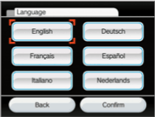
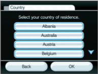
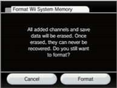

From the Wii Menu, follow the steps below to get to the Wii System Settings 3.
Language
You can change the language setting for your Wii mini console menus and screens by selecting English, French, German, Italian, Spanish or Dutch. Confirm your selection once it's complete.
Country
You can change the country setting for your Wii mini console. Confirm your selection once it's complete.
Format Wii System Memory
This system option is used to permanently delete all channels and all save data that have been added to the Wii mini console, and will re-initialise your Wii mini console. Select the FORMAT option if you wish to delete all channels and save data, then select FORMAT again to confirm your intention.